Ward-Thomas Owners

James Ward, John Thomas

Thomas Steel Plant was located on the east bank of the Mosquito Creek, south of the Erie RR, it was originally the William Ward and Company, built in 1870.

On the southeast corner was the old Ward Residence built in the early 1840s.

An early photo of the Ward–Thomas House Museum
{kind=link}
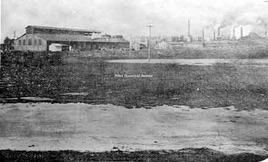
The famous Falcon Iron & Nail Co. constructed in 1867 by Ward Enterprises and demolished by 1900.
{kind=link}
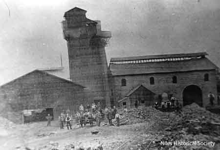
Built in 1870 by William Ward and known as the Wm. Ward & Co blast Furnace, it failed in the Panic of 1873.
{kind=link}
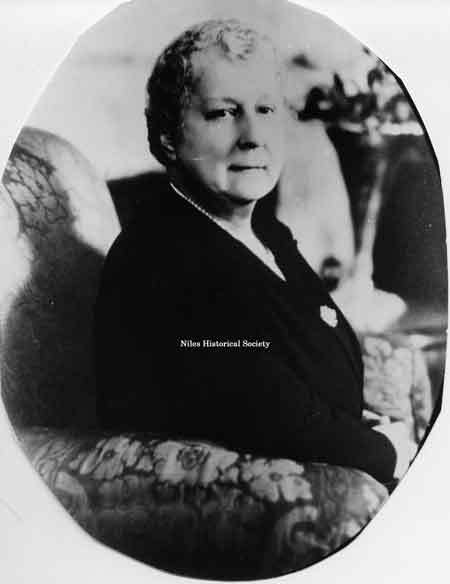
Portrait of Margaret Thomas
{kind=link}
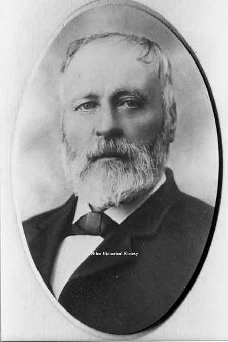
Portrait of John R. Thomas
{kind=link}
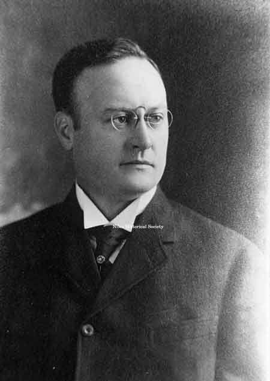
William Aubrey Thomas, son of John R. and Margaret Thomas is the only man from Niles to have ever served as a US Congressman.
{kind=link}
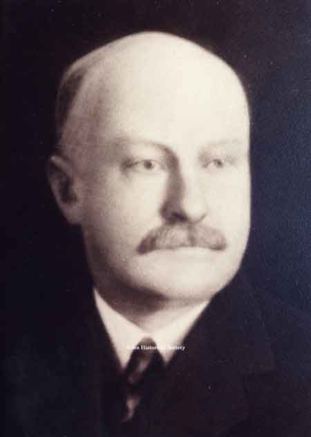
Thomas Edward Thomas, son of John R. Thomas, ran the family businesses for his father. He owned the house directly across the street from the family mansion on Brown St.
{kind=link}
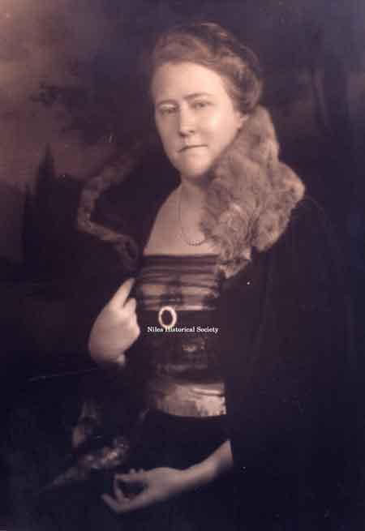
Mary Ann Thomas Waddell, youngest daughter of John R. Thomas,

Pictured is the Dr. Thomas Clingan house built in 1905 close to the Mahoning River and was later inundated by the waters of the 1913 Flood.

Mrs. Waddell was the last of the Thomas family to live in the Thomas house. When she died, her heirs donated the house and land to the city of Niles. The mansion became the home of the Niles Historical Society in the 1970's.

Main entrance of the Ward–Thomas Museum.

Rear view of the Ward–Thomas Museum.

Hot beds of Greenhouse.

Back view of greenhouse.

Garden house attached to greenhouse.

A view of the barn on the grounds of the Ward–Thomas House before it was painted white.

View of the white barn with cupolas
{kind=link}
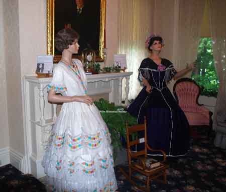
Whitehouse ladies gowns on display.

Child's desk with writing tools.
{kind=link}
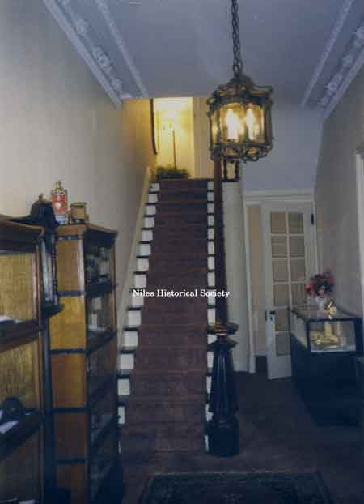
View of formal stairway.

One of several marble fieplaces.
{kind=link}
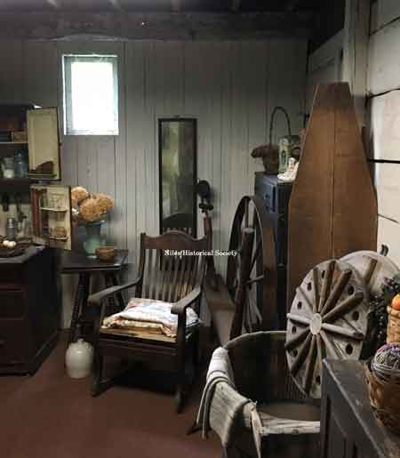
Barn display of kitchen diorama.
{kind=link}
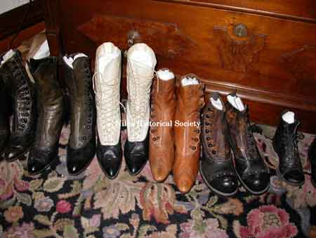
Collection of shoes from early 1900s.

Victorian dresser with mirror.
{kind=link}
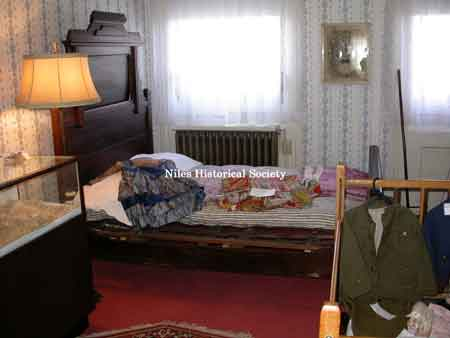
View of one of the second floor bedrooms.

Piano located in the library.

View of formal gardens.
{kind=link}
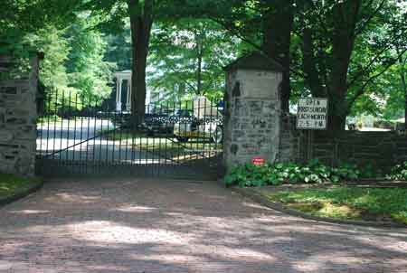
View of main entranceway and gate.
{kind=link}
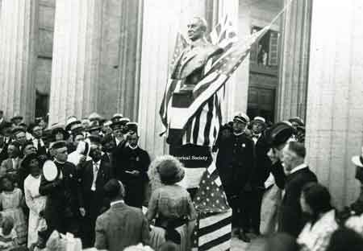
Vice President Calvin Coolidge spoke at the dedication of the Harding bust at the McKinley Memorial on June 18, 1921.

In 1921, a bust of Warren G. Harding was unveiled at the McKinley memorial. Among the distinguished guests on the grandstand were Vice-President and Mrs. Calvin Coolidge.

June 1921, at the dedication of the Harding bust at the McKinley Memorial. Calvin Coolidge is the gentleman in the center and Mrs. Waddell, (Mary Ann Thomas) is to his left.